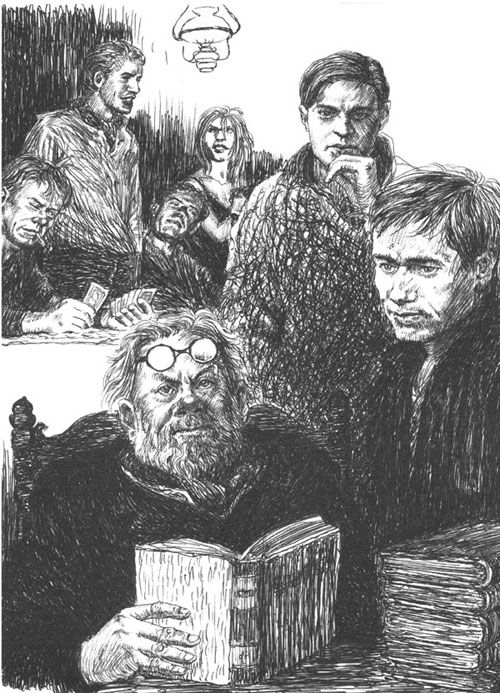

我又到维也纳了。又一次，我从城郊访友归来，突然遇上了倾盆大雨。这雨如湿淋淋的鞭子将人们驱赶到门洞和屋檐下面。我自己也急急忙忙地寻找避雨的地方。幸运的是，现在维也纳的每个角落都有咖啡馆。于是我就躲进了对面的咖啡馆，头上还戴着滴着雨的帽子，肩膀也是湿漉漉的。从里面看，这是一家普通的近郊咖啡馆，风格老旧，没有像市中心仿德国的那些咖啡馆一样带有音乐厅，而是极其具有旧维也纳市民风情。小咖啡馆满满的都是下层人民，他们来这里与其说是消费，不如说是来看报纸的。现在将近傍晚时分。虽然这个咖啡馆中飘满蓝色烟圈，空气混浊，但是天鹅绒沙发显然是新的，那镀铝的柜台也闪着光，十分洁净。匆忙中我没有留意这家咖啡馆的名字——有什么必要呢？现在我坐在这儿，暖和得很。我不耐烦地看着雨水顺着蓝色玻璃窗流下。这烦人的雨什么时候才能停呢？
我无所事事地坐在这里，开始变得慵懒被动。这种慵懒被动的感觉也只有在典型的维也纳咖啡馆才有。我无聊地看着熙熙攘攘的客人们，吞云吐雾的人们使得他们在灯光下显得苍白。我盯着柜台的一位小姐看，看她如何机械化地将糖和勺子放到每杯咖啡里。我半梦半醒，毫无知觉地看着墙上那些无聊的海报。这种昏昏然的感觉还不错。突然，很奇怪地，我从这种状态中醒来，内心世界开始活动，牙齿也开始隐约作痛，但是不知是左边的还是右边的，是上边的还是下边的。我开始不安起来。我突然意识到，虽然我说不出为什么，但我几年前一定曾经来过这儿。记忆中的某处将我同这里的墙壁、椅子、桌子，以及这陌生的、烟雾弥漫的屋子联系起来。
但是，我越是想抓住这些回忆，它们就越像一直在意识深处的狡猾的水母，飘忽不定，让人无法抓住它。我徒劳地看着屋内的每一件陈设，当然，有些是我不认识的，比如那放着叮当作响的结款机的柜台和棕色人造紫檀木墙板。想必这些都是后来才添的。但是我的确来过这里，二十年前，或者更久。这里潜藏着——就像钉子钉在木头里一样——一个早已长大的“我”的一部分。我努力使所有感官都振奋起来，试图通过周遭及内心深处触及到那段回忆。但是该死！我就是触不到那段消逝的、在我脑海中湮灭了的回忆。
我很生气，就像人们面对失败才意识到自己心智不够健全时的恼火一样。但是我并不放弃找回这种回忆的希望。我知道，我只需得到那个小小的记忆之钩，就可以将回忆勾起。因为我的记忆是很奇特的，它既好又坏，既固执而难以驾驭又非常忠实可靠。它将最重要的人和事，读过的和经历过的，吞噬在遗忘的黑暗之中，而且这个黑暗世界没有导火索是唤起不了什么的，只有意志才能唤醒记忆。但是，只要找到一点点头绪，一张风景明信片，几行信封上的笔迹，抑或是变黄的报纸，马上，记忆就会像上了钩的鱼儿一样，从遗忘的深渊中被钓起，重新生动起来。我想起了关于某个人的细节，他的嘴巴，还有他笑时左边那颗缺掉的牙齿。我断断续续地听见他的笑声，他的山羊胡子也跟着抖了起来，笑着笑着，另一副新的面孔浮现了。这一切马上形成了完整的幻影。我记起这个人多年前跟我说过的每一句话。为了真实地看到过去，感受过去，我一直需要一个真实的刺激，一个来自现实世界的助手。于是我闭上双眼，以便更加专注地思考，找到并拽住那记忆之钩。但是什么也没有！完全是徒劳！全部没了，全部忘记了！于是我对自己这部不听话的、糟糕的记忆机器大为恼火，恨不得在脑门上打上两拳，就像人们使劲摇晃坏了的自动售货机那样，因为它没有把我们要买的东西吐出来。不，我再也不能安安静静地坐着了。停止工作的记忆让我很烦恼。我生气地站起身，想去呼吸一下新鲜空气。奇怪的是，我还没走两步，记忆便开始逐渐闪起光来。我突然想到，柜台的右边应该是一间没有窗子的、靠灯光照亮的屋子。事实上也确实如此。虽然壁纸已经更换了，但是室内布局依旧。这儿应该是个正方形的后室，游戏室。我本能地环顾四周，兴奋起来（我觉得我马上就能全部回想起来了）。两张球桌闲置在那里，有如浮着青苔的绿色泥塘。墙角立着几张牌桌，有两个人坐在其中的一张旁下棋，不知他们是内廷参事还是教授。在那个紧挨着通往电话间的铁炉旁的角落，放着一张小方桌。就在这时，记忆犹如闪电般击中我，使得我茅塞顿开：天啊，这不就是门德尔的桌子吗？雅各布·门德尔，那个旧书商。二十年后，我又到了他的地盘，来到了阿尔塞尔街的格鲁克咖啡馆。我怎么能把他给忘了呢？难以想象，我竟然把这位奇人，这个传奇人物，忘了这么久！他是一位旷世奇才，是校园里的风云人物，在仰慕者之中享有盛名。我怎么能忘了这位图书经纪人，这位从早到晚一动不动地坐在这里、象征知识的人呢？他可是格鲁克咖啡馆的光荣和骄傲呢。
这一秒钟我必须闭目回想。他那真实、独特的形象栩栩如生地展现在我面前。我看见他又坐在那张铺着脏兮兮的大理石的桌子旁，桌上堆满了书和信笺。他坐在那里，一动不动，全神贯注而痴迷地透过镜片盯着书籍。他坐着，读着书，嘴也跟着嘟嚷着，就连半秃的脑袋也跟着摇来晃去——这应该是从东方犹太教小学校里养成的习惯。就是在这张桌旁，他读着自己的书籍，用的就是从犹太教法典中所学的读书方法，轻声吟唱，微微晃动身体，像一个黑色的、晃动的摇篮。因为教徒们认为，就像孩子们在摇篮中入睡、物质世界在一上一下的晃动中逐渐消失一样，有节奏地晃动身体有助于进入一种忘我之境。事实确是如此，这个雅各布·门德尔确实做到了两耳不闻窗外事，一心只读圣贤书。在他周围，玩台球的人吵闹着、喧哗着，记分员跑来跑去，电话机铃铃作响。人们擦着地板，生着火炉，但他却丝毫没有察觉，没受影响。有一回，一块烧红的炭从炉子中跳出来，就掉在离他两步远的地方，镶木地板已经烧焦冒烟了。一位顾客闻到了这难闻的气味后冲进来，赶紧把火灭了。而雅各布·门德尔虽然就在两步之遥，并且已被烟呛着，却什么反应都没有。因为他读书的时候，就像别人祷告时那样，又像赌徒赌牌亦或是醉汉眩晕地望着空荡荡的天似的。他读得如此痴迷，如此令人感动。从此以后，不管其他人再怎样读书，我也都不以为然。从这个来自加利西亚的小书商身上，当时尚年轻的我第一次看到了什么叫做真正的聚精会神。就是这种专注造就了艺术家，造就了学者，造就了真正的哲人和地道的狂人，这份百分百的专注简直是悲剧式的幸运与不幸。
是一位年长于我的大学同学第一次带我去见他的。我当时正研究至今都不怎么有名的帕拉采尔斯派医生及催眠家梅斯梅尔，但却不尽如人意，因为可供参考的作品并不多。作为一个新手，我真诚地求教于图书管理员，他却不友善地抱怨道，找文献是我自己的事，不是他的事。就是在那时，我的这位同学第一次提起了他的名字。“我带你去找门德尔吧，”他说，“他什么都知道，也什么书都能搞到。他能帮你从最冷清的德国老书店搞到最冷僻的书。他是维也纳非常有才华的人，也是一个怪人，一个要绝种了的史前大书虫。”
就这样，我们俩来到了格鲁克咖啡馆，看见旧书商门德尔就坐在那里，戴着眼镜，胡子乱蓬蓬，穿一身黑衣，摇晃着身体读书，就像是风中的一丛深色灌木。我们走到他面前，他并没有察觉到。他只是坐在那儿，像尊神像似的边读书边来回摇晃着上半身。在他身后，衣钩上挂着他那破旧的黑色大衣，口袋里塞满了杂志和字条。为了告诉他我们来了，我朋友用力地咳了几声。但是几乎把眼镜贴到书上的门德尔还是没有察觉。最后，朋友用力地敲了敲桌面，声音很大，就跟别人敲门似的。门德尔终于抬头看了看，把那副笨重的铜框眼镜迅速扶到额头上，在挑起的灰白眉毛下，两只眼睛充满惊奇地向我们看过来。这双眼睛小小的，黑黑的，充满了警觉，如蛇信般尖锐与敏捷。朋友把我介绍给他，我按照朋友教的那样，作出一副对那个不帮我的图书管理员不满的样子。门德尔靠到椅背上，用力吐了口唾沫，然后笑了两声，带着很重的东边口音说道：“他不想帮忙？不，是他没这个能耐吧！他就是个可恶的家伙，是头可悲的老蠢驴。我认识他，天啊，竟然有二十年了，但是他却一点儿长进都没有。他们会做的，就只是拿薪水！这些个博士们与其在这边摆弄书本，还不如去推砖头呢！”
这一番推心置腹之后，坚冰终于被融化。一个亲切的招手后，他邀请我坐到那张方桌旁，桌上的大理石刻满了笔记。对我来说，这方桌就好比一座圣坛，给予人们启示。我匆忙讲述了我来此的意愿：与梅斯梅尔同时代的关于催眠术的作品以及后人支持或者反对催眠术的作品。我一说完，门德尔左眼眯了一下，就像射击手射击前那样。但说真的，他只是聚精会神地想了一瞬间，就马上开始流利地说出了二三十本书，就像是在读一张看不见的目录一样。每一本的出版社、出版年代以及大概价格他都烂熟于心。我惊呆了。虽然我做足了心理准备，但是这样惊人的景象我还是始料未及的。我吃惊的样子似乎反倒是取悦了他，因为他马上继续用他那架记忆钢琴弹奏出我所需要的最精彩的书目变奏曲。我是想了解一些关于梦游症和第一个催眠术实验的情况，还是想了解加那斯、驱鬼术、基督教或是波拉瓦茨基理论？一连串人名、书名以及简介从他嘴里蹦了出来。此时我才明白，我遇到的是一个独一无二的记忆奇迹。雅各布·门德尔就是一部辞典，一部包罗万象的活书目。我惊愕地看着这个微不足道、甚至有些邋遢的活书目。在报完八十多本书目之后，他佯装若无其事，但其实心里对自己的成就美滋滋的，然后用那块曾经可能是白色的手帕擦了擦眼镜。
为了稍微掩饰我的惊讶，我胆怯地问他这里面的哪些书可能帮我搞到。“嗯，那得看看，能弄到什么就弄什么，”他咕哝道，“您明天再来吧，到时候门德尔会给您搞到一些的。在这儿是找不到的，但在其他地方总能找到。肯动脑筋的人总是会走好运的。”我礼貌地道谢，但也因为过于在乎礼数而做了件傻事：我向他建议把我说的书名记下来。我说的时候就感觉到朋友的胳膊在警示性地拱我。但是太迟了！门德尔已经瞪了我一眼。这是种什么样的目光啊！既洋洋得意又备受屈辱，既嘲讽又有着高高在上的气势，好似莎士比亚笔下的麦克白的目光——马克德弗要求麦克白不战而降的时候，战无不胜的麦克白就是用这种眼神看着他的。他又笑了两声，那大喉结奇怪地上下滚动，显然他是费劲地吞下了一句脏话。善良的、正直的雅各布有权说出任何脏话，因为只有陌生人，什么都不懂的人，才会提出这种屈辱性的建议——让他，雅各布·门德尔，雅各布·门德尔！让他将书目记下来，就像一个书店学徒或者书铺小伙计那样。就好像他那无与伦比的珍贵大脑还需要如此的辅助手段似的。过了一会儿我才明白，我的这种彬彬有礼对他来说得是多么大的一种屈辱，因为这个矮小、其貌不扬、胡子拉碴、驼背的加利西亚犹太人雅各布·门德尔是一位记忆的巨匠。在他那肮脏、灰白、布满斑点的额头后面有一本看不见的魔法册子，上面清晰地记录着每一个人名和书名，就像钢模印在封面上那样。他知道每一本书，无论是在昨天，还是二百年前出版的，他都能一下子准确地说出书的出版地、作者、价格；无论新版旧版，他都能清楚地记得书的装帧、插图及影印附件。他看过每一本书，无论是他已经拿到手的，还是远远地从橱窗或图书馆中窥视到的，他都要看得仔仔细细，就像一个艺术家看到了他内心的、对外界来说还未成形的景象那般。如果雷根斯堡某家旧书店书目表上的某本书价格是六马克，他立即能想到，两年前另一本这样的书在维也纳某次拍卖会上的售价是四克朗，甚至记得买家是谁。不，雅各布·门德尔从不会忘记任何一本书的名称，任何一个数字。他知道书本中的每一株植物、每一条毛虫，对变化不居却又永恒存在的宇宙中的每一颗星辰都了如指掌。他对每一个专业的了解比本行业的专家们都多；玩转图书馆，他比图书管理员更在行；对存书情况，他比书行的老板更清楚。不需要清单和目录，只凭他天才般的记忆，这种无与伦比的、百里挑一的惊人记忆力。当然，能将记忆力培养到如此地步，靠的就是每一次成功必须的秘诀：集中精力。这个怪人除了书之外，对这个世界一无所知，因为对他而言，世间万物只有用铅字码起，用书本记录了，才是真实存在的。但是，他读书并非单纯读内容。书名、定价、规格和封面更能吸引他。雅各布·门德尔出奇的记忆，仅是一张有着数不尽人名和书名的清单，但不是像平常印在图书馆的目录中，而是印在哺乳动物的大脑皮层上。虽然这份清单并不具有创造性和创新性，但是这种记忆力的完美程度不亚于拿破仑之子人类外貌，莫泽梵帝之于语言，拉斯克之于棋局，布索尼之于音乐。如此的记忆力若是被讲堂或其他公共机构所应用，会让成千上万的学生和学者惊异，也会令他们受益匪浅。但是上流社会却将这个渺小的、教育程度不高、也就上过犹太初级学校的加利西亚旧书商永久地拒之门外。因此，这种惊人的才能只能被埋没，只能施展在格鲁克咖啡馆的大理石桌旁。但是，如果什么时候来了一位伟大的心理学家（我的精神世界中总是还缺少心理学著作），他像布封那样耐心、坚毅地分类动物的全部变种，一一描述被称为记忆力的魔法的种类、特点及最初的形式和演变，他就会想到雅各布·门德尔这位熟知书名、书价的天才旧书商。

“他们会做的，就只是拿薪水！这些个博士们与其在这边摆弄书本，还不如去推砖头呢！”
就职业而言，雅各布·门德尔当然只是一个小小的书贩。每周日他都会在《新自由报》和《新维也纳日报》上登出相同的广告：“收购旧书，价格从优，及时取货。门德尔，上阿尔瑟大街”。接着就是一串号码，其实这是格鲁克咖啡馆的联系电话。他在书库里翻着，和一个留着皇室大胡子的跑腿儿一起把每周弄到的书搬到他的“基地”，然后再从那里转走。他没有正规书商的许可证，只好做些收入颇微的小买卖。大学生们把自己的教科书卖给他，经他易手后这些书再卖到低年级学生手中。此外，他还帮人推荐和搜寻书籍，赚取少量的手续费。在他那儿总能搞到便宜的好货，因为金钱对于他来说并不重要。他总是穿着那件破旧的褪了色的套装。早饭和晚饭，他总是只喝一杯奶，吃两个面包，中午随便吃点儿别人给他从餐厅里送来的食物。他不抽烟，不赌博，甚至可以说他本人并没有活着，只是眼镜片后面的那两只眼睛活着，它们孜孜不倦地用语句、书名、人名供给那神秘的大脑。这松软肥沃的大脑，如草地吸收甘露般汲取着这些资料。他对周围的人不感兴趣，七情六欲中他或许只占了一条，当然也是最合乎情理的那条——虚荣心。有人跑遍无数地方一无所获，疲惫不堪，找他询问求教。在他这儿，任何问题都能迎刃而解，这使他感到满足和快乐。或许他还想，在维也纳城里和城外还有几十人尊重并需要他。每一座大城市都像一座多面巨岩，上面遍布着若干个结晶面，虽然小，却依旧反映出同样大的世界。大多数人不知道，只有少数知情者和志趣相投的人才知它的宝贵。只有喜欢图书的人才会知道雅各布·门德尔。同理，如果人们想请教关于一部音乐作品的问题时，会到音乐之友社找尤泽比乌斯·蒙季舍夫斯基。他戴着灰色的小圆帽，友好地坐在一堆纸和乐谱之中，一看便知你的来意，谈笑间最棘手的问题就被解决了；若是想了解旧维也纳的戏剧和文化，人们都会去请教无所不知的格洛熙老人。所以维也纳藏书家们如果遇到解决不了的问题时，都会来格鲁克咖啡馆找雅各布·门德尔求助。在解答这种质疑的时候找到门德尔，对我这样好奇的年轻人来说是一种另类的享受。通常如果有人给他拿来一本没什么价值的书，他会不屑一顾地把书合上，嘟嚷道：“两克朗。”但是，如果他得到的是一个稀世珍本，他便会恭敬地退到一边，在书下垫上一页纸。看得出，他是为他那双墨迹斑斑的脏手和黑指甲感到羞愧。然后，他便开始小心翼翼地、极度敬仰地一页一页翻起那珍本来。这一秒钟没人能打扰他，就像没人能打扰虔诚的信徒祈祷那样。的确如此，每逢碰到这种买卖，他都会仔细检查翻阅，按照礼仪有顺序地进行，有点儿宗教仪式的味道。他的驼背前后摇晃，嘴里念念有词，手抓着脑袋，发出一些奇怪的声音，拖着长音“啊”赞叹着。
如果碰到缺页或者虫蛀时，他又会发出惋惜的“哎呀”或“唉”。最后，他毕恭毕敬地掂量这本皮装旧书，半闭着眼，嗅着这沉甸甸的大本古书的味道，其陶醉程度不亚于多愁善感的少女痴迷地嗅着晚香玉。这种繁琐的程序进行时，书的主人自然要有耐心。经过一番考究之后，门德尔就会很乐意、甚至是兴致勃勃地回答各种问题，还会准确无误地讲出一连串的轶事和关于此书价格的戏剧性报道。此时此刻，他显得越发有朝气，越发年轻，活力四射。只有一点会惹怒他：不懂事的新手们要付钱给他，作为估书的谢礼。这时，他就会委屈地躲到一边，像一个画廊经理在美国佬参观完给他塞小费表示谢意时会感到羞辱一样。因为对于门德尔而言，捧一本珍贵的书籍在手，就如与女人幽会似的。这样的时刻，就好比柏拉图式的爱情之夜。唯有书，而不是钱，对他来说才有吸引力。因此，一些大收藏家，包括普林斯顿大学的创始人在内，都未能说服他到自己的图书馆做顾问或者采购员——雅各布·门德尔一一回绝了他们。难以想象他会去格鲁克咖啡馆以外的地方。
三十三年前，他还是个留着软软的小黑胡子的其貌不扬的犹太小伙子，从东方来维也纳学习拉比。但很快他就离开了独神耶和华，转而投身图书世界中异彩纷呈的众神。那时，他头一次来格鲁克咖啡馆，逐渐地，这里就成了他的工作室，他的总部，他的住址和他的世界。就像天文学家每夜孤独地在观象台上通过望远镜上的小圆孔观测星空，观察它们的神秘轨道，看它们交织着、变换着、消失后又重现似的，雅各布·门德尔用他的眼睛在这个方桌上看着他的另一个世界，书籍的世界，也是个永恒运转、消逝而又再生的世界，看着这个在我们世界之上的世界。自然，门德尔在格鲁克咖啡馆也是备受尊重的。这个咖啡馆的名声更像是和他那无形的知识海洋联系在一起，而不是和咖啡馆的创始人，伟大的音乐家，《阿尔泽斯塔》和《伊菲吉妮娅》的创作者克里斯多夫·威尔伯德·格鲁克相关。像那个樱桃木旧柜台、那两个草草修补过的台球桌和那把铜咖啡壶那样，门德尔成了这里的一部分财产。他的桌子成了神圣的保留位席。因为咖啡馆的人总是热情招待那些前来求教的顾客们，使得他们每次都要点点儿什么。如此这般，他用知识所赚的钱大部分流入了高级领班德布勒的腰包里。门德尔因此也享受着许多特权：他可以免费使用电话；这里给他保留信件、代订各类书籍；忠诚的清洁工老婆婆给他洗大衣、缝纽扣，并每周给他送一小包衣服到洗衣店……唯有他可以每天从隔壁的餐馆拿午餐。每天早晨，咖啡馆老板史坦哈德先生都会亲自走到门德尔桌前向他问候（当然，大多数时候门德尔都在埋头苦读，并没有看到他）。早上七点半，他准时踏进咖啡馆，直到关灯打烊了才离开。他从不和其他顾客攀谈，从不读报，对周围的变化一无所知。一次，史坦哈德先生礼貌地问他，在电灯下看书是不是比原来的灯光闪亮好多，是否在煤气灯下看书更佳。他惊奇地看了看灯泡：虽然装灯敲敲打打、吵吵闹闹了好几天，他却丝毫没有察觉。只有数以亿计的字母像黑色的毛虫般穿过两个圆眼镜，穿过那两片闪烁的、汲取着信息的镜片，涌入他的大脑。其他的一切，如无声的喧嚣，都与他无关。在这三十多年里，或者说在他醒着的时候，他都是在这个方桌旁度过的。他边读书边比较，边做计算，马不停蹄，唯有睡觉才能让他停下几小时。
因此，当看到门德尔的大理石桌子像墓穴板一样空着的时候，一种惊诧之感便会向我袭来。这么多年后我才明白，每当这样一个人逝去，随之而逝去的东西会有多少！先是因为在这个越发单调的世界上，仅此唯一的事物越来越珍贵；此外，当时的我虽然年轻，没有多少阅历，但是内心深处却是十分喜欢这个雅各布·门德尔的。不错，在这炮火连天的岁月，我本可以把他忘记，而且之后我也开始专注于自己的事情，就像他专注于自己的事情那般。但是现在，站在这空空的桌前，我对他有种愧疚，同时又重新产生了好奇。
他到底去哪儿了？他为什么不在这儿了？我叫来了服务生询问。不，遗憾的是他不知道这位门德尔先生。不过没准儿领班知道吧？他挺着个大肚子慢悠悠地走过来，想了一下，不，他也想不起一位门德尔先生，还问我是不是那位在弗洛瑞安娜小巷的杂货店老板曼德尔先生。一丝苦涩涌上心头：既然生活的轨迹已被随风吹走，那人为什么还要活着？一个人曾经在这里呼吸、读书、思考、交谈了三十年，或者是四十年之久，仅仅三四年的时间，新法老上台后，就没人记得约瑟夫了。格鲁克咖啡馆里没人记得雅各布·门德尔了，那个旧书商啊！我近乎愤怒地问刚才那位领班我可否见一下史坦哈德先生，如果他没在，这里还有谁是老员工。什么？那位史坦哈德先生，天啊，他早就把咖啡馆卖掉了，据说他已经死了。至于原来的那位领班，他现在住在克雷姆斯附近的庄园里。是，当时的人都不在这儿了……等等，还有！那个女清洁工斯波希尔太太还在这里。不过她可能已经记不起这个人了。但我马上想：人们是不会忘了雅各布·门德尔的，于是就请他把这位太太叫了来。
她来了。这位斯波希尔太太有着蓬乱的白发，沉重地迈着浮肿的双腿，边走边用布擦着两只发红的手——显然是刚打扫了屋子或是擦了窗子。我马上就看出，突然把她叫到咖啡馆亮堂堂的屋里来，她有些不太高兴。她不信任地上上下下地打量我，目光中带有戒备。“您找我来有何贵干？”但我一问起雅各布·门德尔，她就两眼吃惊地看着我，兴奋起来。“上帝啊！那可怜的门德尔先生，还有人想着他！哦，可怜的门德尔先生啊！”她感动得差点儿哭了出来，就像上了年岁的人突然想起自己的青春年代，想起被人遗忘的、却是属于那个年代的事情！我问她门德尔先生是否还在世。“哦，天啊！可怜的门德尔先生已经死了有五六……哦不，七年了！多好的一个人啊，想想看，我认识他二十五年还要多哩！我来的时候，他就已经在这里了。就让他那样死去，简直是一种耻辱！”她越来越激动，问我是不是他的亲戚。“没有人关心过他，没有人打听过他的情况，你不知道他出了什么事吗？”
在这个越发单调的世界上，仅此唯一的事物越来越珍贵。
是啊，我什么都不知道，我保证说。她得告诉我，把一切讲给我听。这位好心人有点儿胆怯，有所顾忌，总是擦着她那双湿漉漉的手。我明白了：作为一个清洁女工，她蓬头垢面、围着脏围裙站在咖啡馆中央是一件很尴尬的事情。而且她一直担忧地环顾四周，看是否有人偷听。于是，我建议到游戏房，到门德尔常呆的老地方去，在那儿给我讲关于门德尔的一切。她感动地点点头，感谢我对她的理解。这位年迈的、步履蹒跚的老人走在前面，我跟在后面。两个服务员惊讶地目送我们，他们觉得我们一定是在搞些什么名堂，有些顾客对我们这不伦不类的组合也感到奇怪。在他的桌子旁，她给我讲了雅各布·门德尔的故事（有些细节是我后来从别处打听到的）。
她说，战争爆发后，他像往常一样，每天七点半来，坐在那里，从早到晚地读他的书。咖啡馆的人总想让他意识到战争的来临，这是因为他从不看报也从不与人交谈。街头卖报的小贩大声叫着号外、人们都涌上去的时候，他从没离开过座位，或许是压根儿就没有听到。他没有发现服务员弗兰茨不见了（他是在格尔里斯附近阵亡的），也不知道史坦哈德先生的儿子在彼列梅什卡被抓。他从没抱怨过面包变得越来越难吃，也没抱怨过他的牛奶被换成了无花果制的劣等饮料。只有一次他感到奇怪，怎么最近来的大学生这么少呢？仅此而已。“上帝啊，这个可怜的人，除了他的书，他什么也不知道啊。”
但是有一天，不幸降临了。上午十一点钟时来了个宪兵和一个秘密警察。他们带着徽章，询问是否有个叫雅各布·门德尔的人常来这里。然后他们马上走到门德尔桌子前。他开始还无知地以为他们是来卖书或者是来向他咨询的。但是他们马上要求他跟他们走，于是就把他带走了。这件事着实是咖啡馆的耻辱：人们围着可怜的门德尔先生，他夹在两个人中间，把眼镜抚上额头，一个个地看着大家，不知道他们想要他做什么。斯波希尔立马对宪兵说，一定是搞错了，像门德尔先生这样的人是连个苍蝇都不会碰的。那个秘密警察立即训斥她，说她不应该干涉公事。接着他们就把他带走了，之后很长一段时间他都没有回来。两年啊！至今斯波希尔也不知道，当时他们想要他做什么。“但是我敢发誓，”她，这位年迈的女士，激动地说道，“门德尔先生绝对没有做坏事。我担保他们一定是弄错了。这样对待一个可怜的、清白的人，简直就是犯罪！”
善良而激动的斯波希尔太太是对的。我们的朋友雅各布·门德尔的确什么坏事都没有做（后来我才知道了全部细节），他只是做了一件昏头昏脑的傻事，原因就是他不问世事。事情是这样的：负责监视与国外通讯的军事检察机关有一天发现了一张由雅各布·门德尔署名的明信片。这明信片是要寄到国外的，但是难以置信的是它是要寄往敌国的，收件人是巴黎格雷勒尔街的一个书商让·拉布尔台。雅各布·门德尔抱怨他近期没有收到《法兰西图书通报》月刊，尽管他已经交了一年的订费。这位初级检察官原本是位体育教师，喜欢咬文嚼字，后来才穿上了蓝色的民兵制服。当看到这封信的时候，他简直惊呆了，他觉得这是个愚蠢的玩笑。每周，经他手查究有无可疑词句和间谍信息的信件不下两千封，但他还从未碰到过如此荒唐之事：一个人竟然如此胆大放心地从奥地利往法国写信，如此简单地将寄往敌国的明信片就这样放进邮筒里，好像一九一四年以来，国境上没有铁丝网，好像法国、德国、英国和俄国每天都没有厮杀，没有使对方的男性数量数以万计地下降。因此，他起初没把这张明信片当回事，只是把它当做一纸荒唐扔进抽屉里，也没有向上级报告此事。可是，几周后，又有一张明信片，又是这个雅各布·门德尔，寄给伦敦霍尔伯恩广场的约翰·阿尔德里奇书店，询问是否能够得到近期的《古董商》杂志。署名又是那个奇怪的雅各布·门德尔，还天真地把详细地址写了下来。这位身着军服的体育教师此时不禁吃了一惊——在这个拙劣玩笑的背后不会隐藏着什么秘密吧？于是他站起身来，立正，把两封信放到了少校桌上。少校耸耸肩：真是件怪事！他先吩咐警察去查看是否真的有这么个雅各布·门德尔存在。一小时之后，雅各布·门德尔就被捕了。他还没搞清楚状况，就被带到了少校面前。少校给他看那两张神秘的明信片，看他是否承认这是他寄的。这种严厉的审讯的语气，在他正读一本重要的书目时打扰到他，使得门德尔十分生气。他几乎是骂着说，这些明信片当然是他写的，人们总得有权利得到自己已经付过费的杂志吧！少校坐在桌旁的一张沙发上，转身跟旁边的中尉说：“真是个傻子！”然后，他就开始考虑是要把这个糊涂虫赶走好呢，还是要认真处理这件事情。在这种犹豫不决的时候，几乎每个部门都会先做记录再说。做个记录总是好的，即使没有用，也没啥坏处。大不了是在堆积如山的公文里面再加上一张废纸罢了。
然而，这却伤害了一个可怜的、无辜的人。因为在提出第三个问题的时候，情况就不容乐观了。他们先问了他的名字：雅各布，确切地说，是雅因科夫·门德尔。职业：商贩（他没有图书经营证，只有商贩证）。第三个问题导致了灾难：出生地。雅各布·门德尔说了一个在皮特里科夫附近的小地方。少校蹙起了眉毛：皮特里科夫，这不是俄属波兰的城市，靠近边界线的吗？可疑！十分可疑！少校更严厉地审问他，问他何时取得奥地利国籍的。门德尔吃惊地望着少校，他不明白少校在说什么。见鬼了，他没有证明文件，他只有商贩证。少校越来越惊讶了。他要他说清楚国籍的问题，以及他父亲是奥地利人还是俄国人。门德尔平静地说：当然是俄国人。那他自己呢？哦，他三十三年前偷偷越过国境，自那时起便生活在了维也纳。少校越发不能平静了。他什么时候取得奥地利国籍的呢？门德尔问到：“何必问呢？”他从来不理会这档子事。那他还是俄国国籍？门德尔早就对这些无聊的问题产生了反感，他冷淡地答道：“其实是的！”
少校吓得猛地往后靠，压得沙发背咯咯响。竟然还有这种事！在维也纳，奥地利的首都，一九一五年底，战争激烈之时，塔尔诺夫战役和大反攻之后，居然有个俄国人在这里逍遥自在地来回逛，还给法国和英国写信，警察居然对此不闻不问！那些报社的蠢货们竟然还对康拉德·冯·黑岑多夫没能打入华沙而感到惊奇。在总参谋部，人们总是对部队每次的调度行动都被间谍们通报给俄国而感到惊讶。中尉这个时候也站了起来，走到桌前，谈话顷刻间变成了审讯。他为什么一开始没说自己是外国人呢？门德尔仍然毫无戒心，用悦耳的犹太方言答道：“我为什么一定要说我是谁呢？”这种反问被少校视为挑衅，他用威严的语调问他是否看了命令。没有！看不看报纸呢？不看！
两位军官盯着不安到略微出汗的雅各布·门德尔，这件事稀奇得就像月亮掉进了这间办公室里似的。之后，电话机叮铃铃直响，打字机也被敲得劈啪作响，传令兵来回奔跑。雅各布·门德尔就这样被送到了驻防地监狱，等待被送到集中营。当人们示意他跟两个士兵走时，他惶恐地瞪着眼睛。他不明白他们想要他干什么。其实，他倒也不需要操心：这个衣领上绣着金线、粗声粗气的家伙又能对他做什么呢？在他崇高的世界里——在那个书籍世界，没有战争，没有误解，有的只是无尽的知识，以及对更多知识的渴望，还有那些数字、词汇、人名、书籍……所以他心情还不错地跟那两人下楼了。只是在警察局，当人们把他大衣口袋里的书掏出来，要他交出装满着几百张有用的字条和顾客联系地址的钱包时，他才愤怒了起来，开始自卫。人们只能强迫他了。可惜这时他的眼镜掉到了地上，他那窥探精神世界的窗口被摔成了好几片。两天后，他还穿着一件单衣就被送到了科莫伦附近的俄国平民集中营。
在集中营的两年，雅各布·门德尔失去了他挚爱的书籍，也没有了钱，生活在一大群冷漠、粗鲁、大部分还是文盲的人群中，经受着巨大的精神折磨。他就像是鹰失去了翅膀，不能再飞翔。世界从疯狂中清醒过来，他渐渐开始明白，在这场残酷的战争中，最没有意义的、多余的、不道德的行为，莫过于把那些无辜的、早已超过应征年龄的、已经将异国视为家乡生活了多年的平民们圈进铁丝网中。他们没有及时逃跑，是因为他们相信连古斯通人和阿劳坎人都崇尚的优待客人的律法。然而在法、德、英，在这些丧失理智的土地上，人们却荒唐地犯下各种反文明的罪行。最后一刻，如果不是一个典型的奥地利式的机缘巧合使雅各布·门德尔重回他的世界，那他会像千万的无辜者那样，变成疯子，因为痢疾、过劳死，或是心灵折磨而死去。在他失踪之后，一些有名望的顾客给他写信，其中就有前任施迪马克总督申伯格伯爵，徽章学著作的狂热收藏家、曾经的神学系主任、正在评注奥古斯丁的齐根费尔特、八十岁高龄仍旧反复修改回忆录的退役舰队司令艾德勒·冯·匹斯克。这些他的忠实顾客不断地给格鲁克咖啡馆的雅各布·门德尔写信，其中几封被转送到了集中营。这些信件落到一位具有善心的上尉手中，他很惊讶这个矮小、半瞎、肮脏的犹太人竟然同那些名流有来往。这个犹太人自从眼镜被打碎后（他没有钱买新的），就像个鼹鼠似的，绝望、麻木、安静地蹲在一个角落里。他有那样的朋友，必定是一个大人物！因此上尉准许门德尔回信，请求他的靠山为他说话。果然奏效，几位显贵和那位系主任还有所有的收藏家团结起来，联名担保。于是旧书商门德尔在被关押两年后，于一九一七年回到了维也纳。当然，释放也是有条件的：他需要每天到警察局报道一次。不过，他总算是恢复了自由身，又可以住在他过去那个狭小破旧的阁楼里，又可以欣赏橱窗展示的书籍。最重要的是，他又可以回到格鲁克咖啡馆了。
门德尔从地狱重返格鲁克咖啡馆之后的事情，斯波希尔，这位善良的太太，给我讲述了她的亲身经历。“有一天，我的天哪，我都不敢相信自己的眼睛！门被慢慢打开了，开门的方法有点儿怪，您是知道的，只开了一条缝。就如往常地，他，可怜的门德尔先生，跌跌撞撞地进来了。他穿着一件褴褛的军大衣，上面全是补丁，头上戴着一顶似乎曾经是圆顶帽的东西，是捡的别人扔掉的。他没戴衣领，看起来如死人一般脸色惨白，一头白发，骨瘦如柴，让人看着都心酸。但是他走进来，就像什么都没发生一样，什么也不问，什么也不说，走到他的桌子前，脱下大衣，只不过不如曾经那样灵活敏捷了，有些费劲，还气喘吁吁。他不像往常那样带着书，只是坐下来，一言不发，眼神呆滞。后来，我们给他带来一堆从德国寄来给他的信，他才又开始读了起来。可是，他再也不是从前的那个人了。”
不是，他不是以前那个人了，不再是那个神奇的记忆王，不再是神奇的书籍宝库了——人们看到他时都是这么伤心地说的。他身上有什么东西被摧毁了，他不再目光镇定、泰然自若地读书了。有什么东西被毁灭了——显然，那凶残的嗜血恶煞也袭击了图书世界这颗平静的星球。他的眼睛几十年来习惯了娟秀、安静、像虫足般的印刷字，但在用铁丝网圈成的人堆里面，想必他是看到了许多可怕的事情。他的眼皮沉重地悬于眼睛上方。曾经，这双眼睛非常机敏，闪烁出讽刺的光芒，现在却是无精打采，眼睑红肿，眼镜也是修理后勉强绑在一起的。更糟糕的是，他的记忆已经混乱了，好比一座精美的艺术建筑的某个支柱倒了，整个建筑也毁于一旦。因为我们的大脑是多么脆弱啊，它是微纤维构成的控制设备，一部协调我们知识构成的精密仪器，只要一根细微的血管被堵塞，一根神经受刺激，或是一个细胞过度疲劳，都能极大地破坏精神上的和谐。而门德尔的记忆，这架知识的键盘，在他回来之后已经出现了故障。偶尔有人前来询问请教，但他只能颓废地盯着客人，不再清楚对方的要求，还总是听错或者忘记别人说的话。他的世界不再是原来那个世界，门德尔也不再是原来那个门德尔。他不再摇头晃脑、专注地读书了。大部分时间他呆坐着，双眼机械地盯着书本，人们不清楚他是在看书，还是在心不在焉地闲着。斯波希尔太太说，有时候他的头重重地砸在书上，大白天他就睡着了。有时候他几个小时几个小时地盯着那个味道刺鼻的电石灯灯光出神，缺煤的时候人们就往桌上放这么一盏灯。不，门德尔不再是门德尔了，不再是世界的一个奇迹，不过是苟延残喘的一把胡子和一堆衣服，无意义地摊在那把曾经的圣椅上。他不再是格鲁克咖啡馆的荣耀，而是个耻辱、污点。他浑身散发臭味，让人看了就恶心，成了一个碍手碍脚的多余的食客。
咖啡馆的新老板——来自莱茨的弗洛瑞安·古特勒，也是这样看待他的。这位老板是一九一九年靠面粉和黄油的投机买卖发家的。他劝动了老实的史坦哈德，用之后不久就贬值的克朗纸币买下了格鲁克咖啡馆。新老板用一双健硕的农民的手，很快就把历史悠久的格鲁克咖啡馆改造得高雅起来，购置了新椅，休葺了大理石门。旁边正好有一家酒馆，他打算把它扩建成小型音乐厅。美化咖啡馆的时候，这个从加利西亚来的、早晚独占一张桌子的食客自然成了障碍。他每天来只喝两杯咖啡，吃五个面包。尽管史坦哈德特地交代这位新店主关照这位特殊的客人，并试图解释雅各布·门德尔的重要意义和价值，可是他还是把门德尔作为咖啡馆固有资产的一部分一并交给他了。然而，弗洛里安·古特勒在购置新的家具和亮闪闪的铝柜台的时候，也显示出他的唯利是图。他在等待时机，找个借口，把这最后剩下的寒酸的乡巴佬从自己的酒馆里赶出去。时机很快就来了。因为门德尔的处境每况愈下，他最后的积蓄都进了通货膨胀时期的纸厂，他的顾客也都散落各地了。他已经没有力气像书商那样，楼上楼下地收购和买卖书籍。无数迹象表明，他已经穷困潦倒了。他很少叫餐厅送饭过来，甚至连买咖啡和面包的那点儿小钱他也得欠着，而且越拖越久，有一次甚至拖了三周。那时候领班就想把他轰走了。好心肠的清洁工斯波希尔太太同情门德尔，为他做了担保。
但是第二个月时，不幸的事就发生了。新来的领班已经好几次发现，结账时面包类食物总是不对。越来越多的面包丢失了，真正出手的面包比已经付费的面包数量多。他当然怀疑门德尔，因为那个瘸腿的老头多次来抱怨，说门德尔欠了他半年工钱，他连一个赫勒都拿不出。领班开始特别留意他了。两天后他抓到了门德尔，他躲在壁炉旁边，看到了门德尔是如何偷偷地从自己的座位上站起来，走到前面的房间，迅速从篮子中抓了两个面包，狼吞虎咽地吃下去的。但是结账的时候他却说他没有吃。面包丢失的事情现在查明了。领班立马向古特勒先生汇报了这件事，这个老板喜获良机，当着众人的面呵斥门德尔，指责他盗窃，还为他不马上报警一事自夸了一番。他要门德尔立马滚蛋，永远不许回来。雅各布·门德尔颤抖着，一言不发，从他的座位上站起来，蹒跚而去。
“太惨了！”斯波希尔太太描述着他被赶走的情景，“我永远忘不了他起身的情景。他把眼镜扶好，面色苍白如纸。他没有时间穿上大衣，即使那时是寒冷的一月，您知道吧，那年冷得厉害！他吓得连他的书都忘在了桌上。我发现后，本想拿给他，但是他已经到门口了。在大街上我可不敢叫住他，因为古特勒先生在门口站着，对着他大喊大骂，让周围的人都过来围观。简直就是耻辱！内心里我真是羞愧死了。如果史坦哈德先生在世的话，是绝对不会发生这样的事的。为了几个面包就把人撵走？门德尔可以在他这儿终身免费吃！但是现在的人都没有良心了，把一个人从他三十年来天天在的地方赶走，真是可耻啊。在上帝面前我不会为这件事辩解，我不会的。”
这个善良的老太太变得很激动。她用老人特有的那种唠叨劲儿不停地说，这是罪过啊，史坦哈德先生不会做这样的事。我最终不得不打断她，问门德尔究竟怎么了，她是不是又见到他了。她抖了抖精神，甚至更加激动地说道：“每天，我经过他桌子的时候，心就像被戳了一下，真的。我总在想，可怜的门德尔先生在哪儿呢？如果我知道的话，我就给他送点儿热的东西吃，不然他哪有钱取暖吃饭呢？据我所知，他在世上已经没有亲戚了。后来，日子一天天过去，我还是没有他的消息。我就想，他想必是不在世了，我再也见不到他了。我甚至还考虑给他做个弥撒。因为他是一个好人啊，我认识他超过二十五年了！
“但是，二月里的一天，早晨七点半时，我正在擦着窗户上的铜插销，突然（当时她吓了一大跳）门开了，门德尔先生进来了。您是知道的，他总是侧着身子从半开的门里蹭进来，但是这次有点儿不一样，我马上就发现他有些不对劲。他东倒西歪的，两眼通红。天啊，他只剩一把骨头和胡子了！他这个样子让我觉得很可怕。我当时就想，他已经什么都不知道了，大白天的像游魂似的到处乱晃。他忘记了一切，忘记了偷面包的事情，忘记了古特勒先生，忘记了他是怎么把他赶出去的，他对自己的事情也一无所知了。谢天谢地！古特勒先生没来，领班在喝咖啡。我一个箭步冲上去，跟他说不要留在这里，免得再一次被这个粗人赶出去（这时，她小心地看了看周围，赶紧纠正了自己的说法）。我的意思是，不要被古特勒先生再赶走。于是我喊了他一声‘门德尔先生’。他看了我一眼。就是这一眼，天啊，太可怕了，他大概是一下子全部想起来了。他吓了一跳，发起抖来，不只是手，他浑身上下都哆嗦。他急匆匆地向门口走去，但一到门口就摔倒了。我们马上给救济组织打了电话，他被他们带走了。但晚上他就死了，肺炎，又高烧，大夫是这么说的。他还说，来我们这儿时，他可能已经昏昏沉沉，自己也不知道为什么就走到这里，像是做梦似的。天啊，如果有谁三十六年来天天都坐在同一张桌子旁，那这桌子对他来说就是家啊！”
我们，了解这个怪人的最后两人，又谈了关于他的很多事。尽管他的存在是那么渺小，但他还是引导了年轻时候的我进入那个浑然一体的精神世界；而她，一个可怜、劳碌的清洁女工，没读过书，却唯独她可怜这位同是底层世界的难友，就是因为她为他刷了二十五年的大衣，缝了二十五年的扣子。但是，站在他这张被遗弃的旧桌子旁，共同缅怀这位故人时，回忆使人们更加亲近，而充满爱的回忆能更加紧密地把人联合到一起。“天啊！瞧我这记性，他那本书还在我这儿呢，就是当初他落在桌上的那本。我应该怎么送给他呢？后来一直没人来取，我就想，我把它留下作为纪念吧。这没什么不对，是吧？”她急忙到后面把书拿来了。我好不容易忍住不笑，命运真是弄人。这本书是海因的《德国色情和趣味文学书库》第二卷，是每位收藏家都熟悉的一本色情作品汇编。恰恰是这本烂书成了那位故人留在这双日夜操劳、红肿、除了祈祷从未碰过书本的双手中的最后遗物。我努力地抿着嘴巴，控制自己，不让自己笑出来，虽然我内心十分想笑。而这片刻的犹豫，让这个善良的女士感到疑惑。这是不是什么值钱的东西呢？或者，她是不是可以继续留着呢？
我真诚地和她握了握手。“您就只管留着吧。我们的老朋友门德尔要是知道，在众多因书而要感谢他的人中，至少还有一个记得他，他会很高兴的。”然后我就走了。在这位善良、真诚、用人性面对死者的忠诚的老太太面前，我为自己感到羞愧。因为她，这个没受过教育的人，至少还保存着一本书，去更好地纪念他；而我，本应知道人们写书就是为了死后依然能与在世的人保持联系，以免自己受众生之敌——短暂性与遗忘性的迫害。然而我竟然忘记旧书商门德尔好多年了。